Cognitive control of eye movements
A model of voluntary and involuntary saccade generation
Ryan M. Hope
Rensselaer Polytechnic Institute
Voluntary vs. involuntary eye movements
Humans make on average 1-4 saccades every second
- thats 10s to 100s of thousands of saccades per day
- how many are deliberately planned?
Humans feel like they can VOLUNTARILY move their eyes:
- to any location
- at any time
Certain circumstances absolutely INVOLUNTARILY saccades:
- e.g. the sudden onset of a visual stimulus
Evidence supporting automatic saccade timing
corrective eye movements (aka glissades)
- short intersaccadic intervals
- no intersaccadic interval
- overlapping saccades
fixational eye movements (aka microsaccades)
- reduce image fading from photoreceptor fatigue
- possibly related to shifts of attention
- follows main-sequence
smooth pursuit
- lots of small regularly spaced unconscious saccades
Short intersaccadic intervals
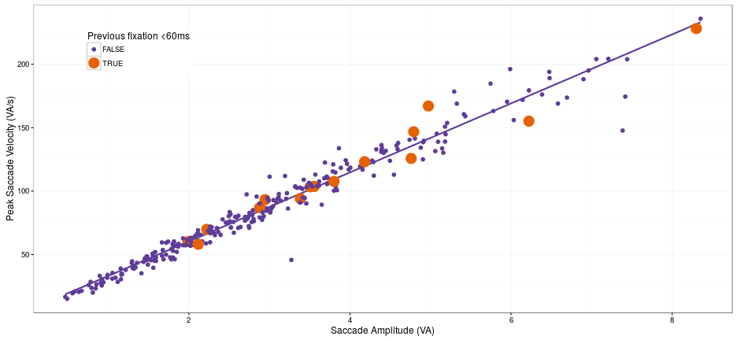
Overlapping saccades and glissades
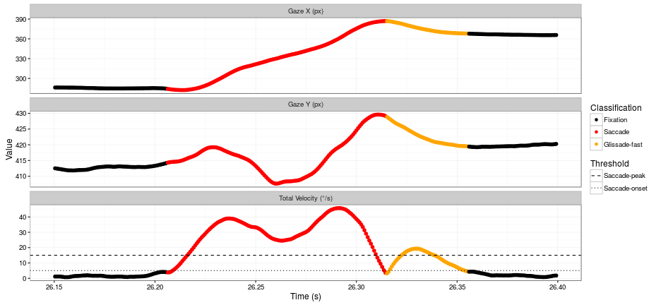
Smooth pursuit
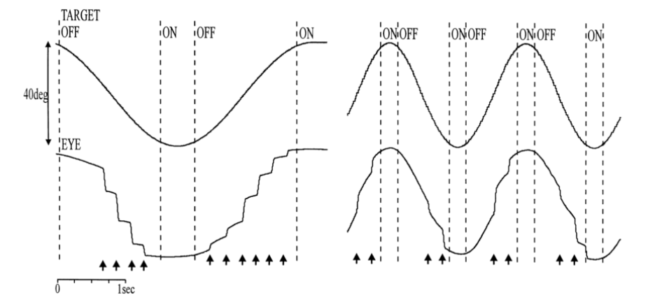
The (C)ontrolled (R)andom-walk with (I)nhibition for (S)accade (P)lanning model
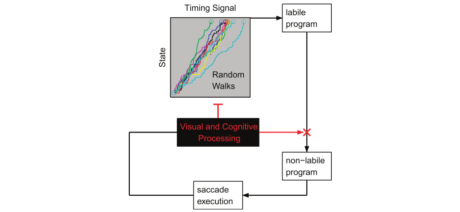
CRISP control mechanisms
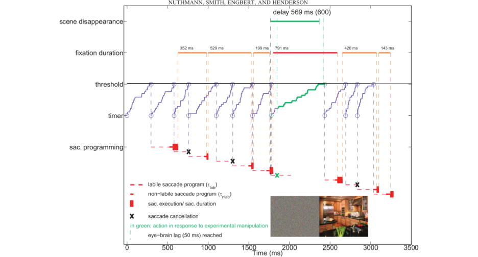
CRISP DEVS (Discrete Event System Specification)
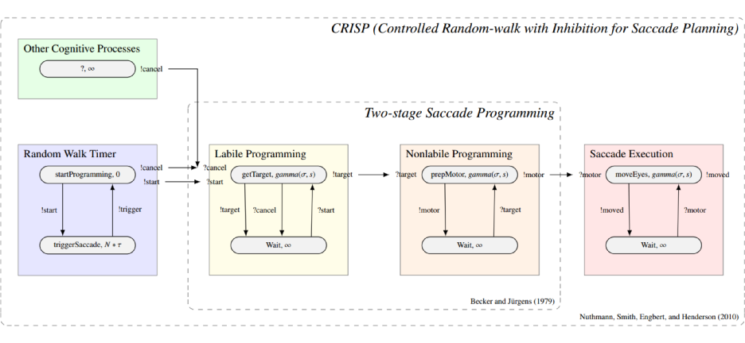
https://github.com/RyanHope/PyeMovements/blob/master/crisp.py
The Experiment
Mixed-block antisaccade task
- 23 subjects
- 480 trials split by 12 blocks
- 20 anti / 20 pro per block
- Dropped all trials with blinks between fixation point offset and first saccade
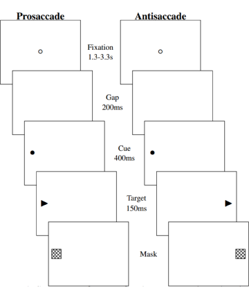
Saccade response accuracy
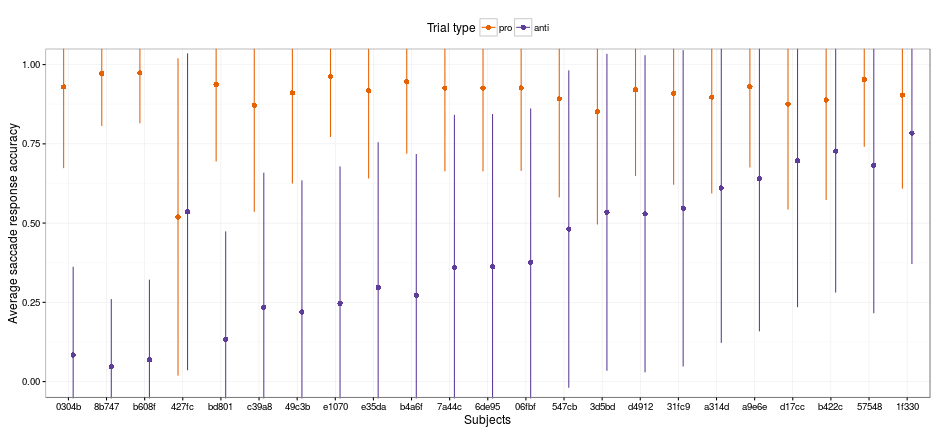
Saccade latency
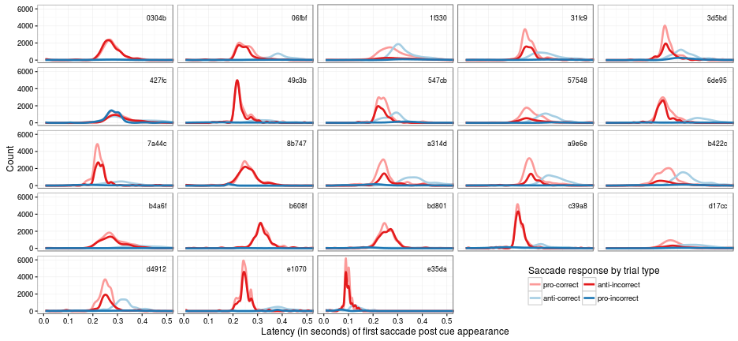
Saccade amplitude
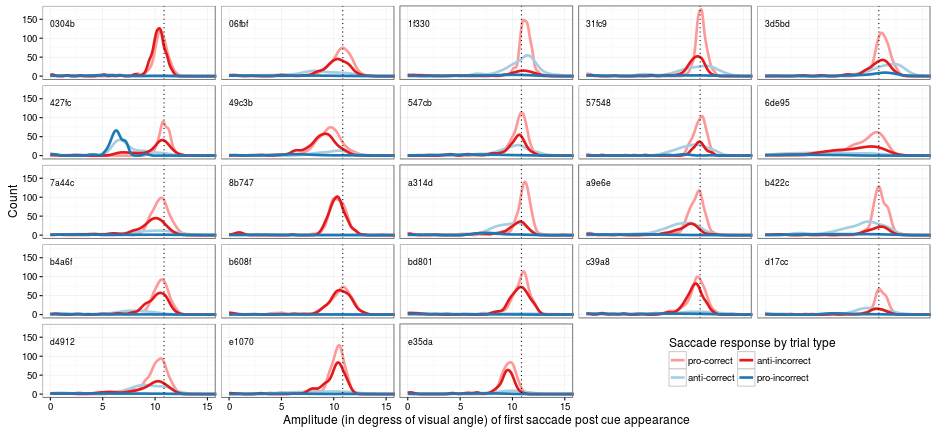
Main sequence
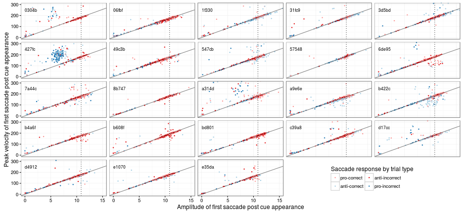
Models & Simulations
Simulation 1
Sim1 saccade latency (prosaccade trials)
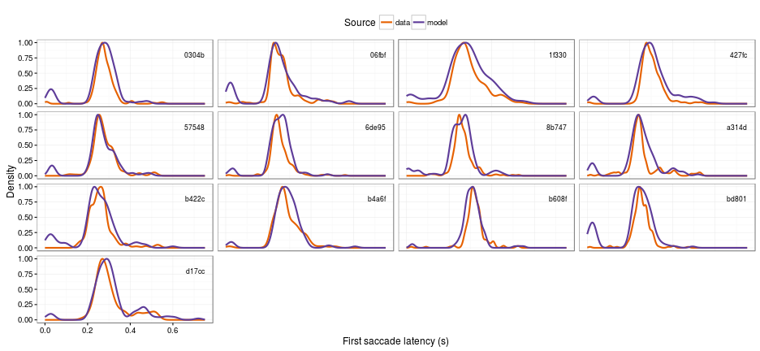
Sim1 saccade latency (antisaccade trials)
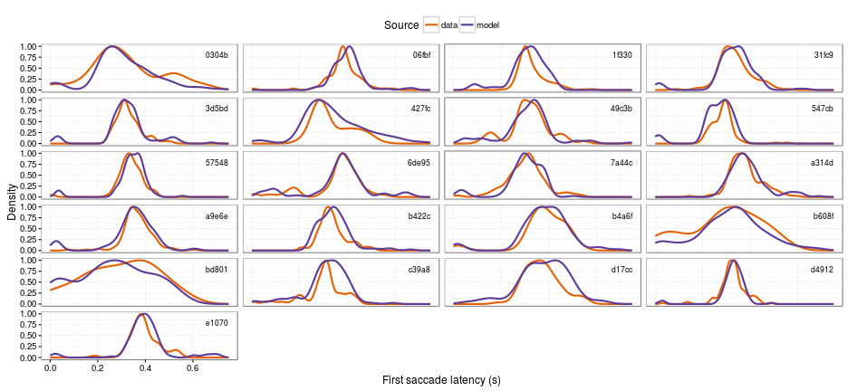
Sim1 cluster analysis
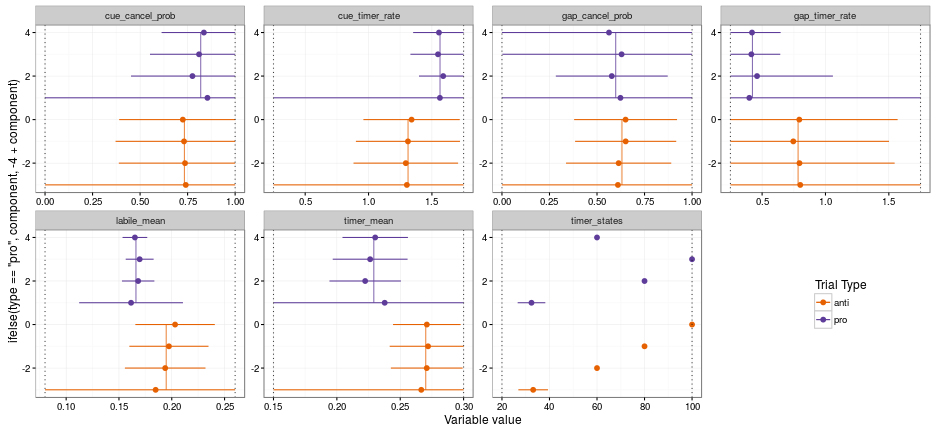
Simulation 2
Sim2 saccade response accuracy
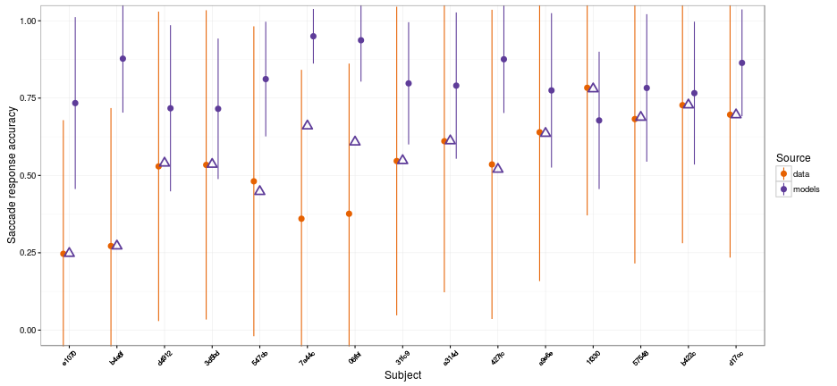
Sim2 saccade latency (prosaccade trials)
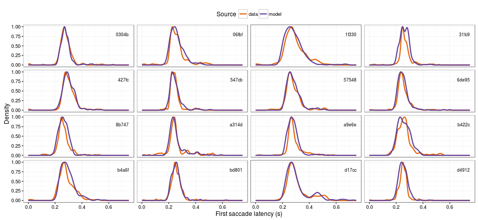
Sim2 saccade latency (antisaccade trials)
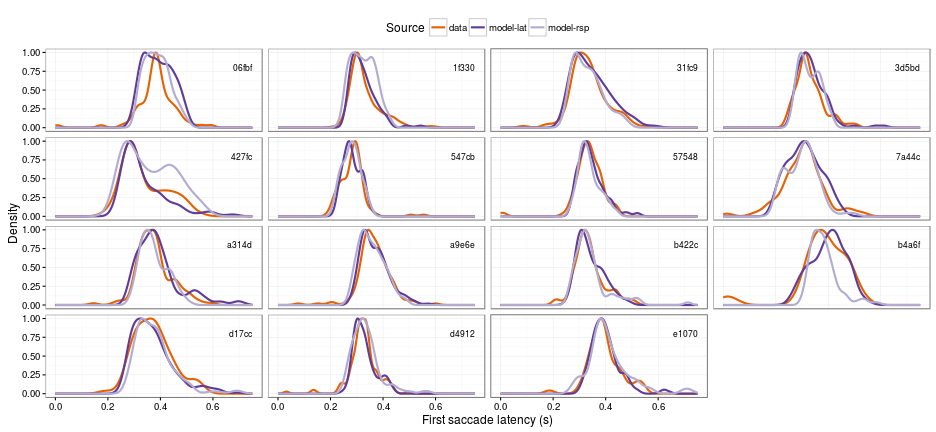
Sim2 cluster analysis
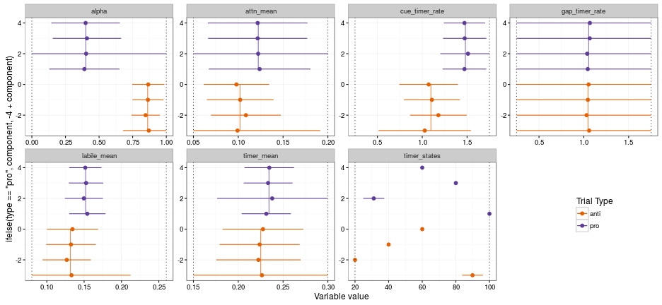